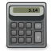

Büroanwendungen
Unter Linux gibt es eine Menge Software, welche für den Büroalltag mehr als geeignet ist. Dem Datenaustausch mit Benutzern unterschiedlicher Betriebssysteme steht nichts im Wege: mehr zum Thema Datenmigration.
Office¶
Abiword - Schlankes Textverarbeitungsprogramm mit gutem Funktionsumfang
Apache OpenOffice - Textverarbeitung, Tabellenkalkulation, Präsentation, Datenbankprogramm, Vektorgrafikprogramm
CellWriter - u.a. handschriftliche Eingaben von Tabletts auslesen
CHM
 Windows Hilfedateien anzeigen und konvertieren
Windows Hilfedateien anzeigen und konvertierenCrossOver - auf bestimmte Windows-Büroanwendungen optimierte Version von Wine
DjVu
Dateien lesen, erstellen, komprimieren, archivierenDjVu/Programme - Anwendungen
ERP
„Enterprise Resource Planning“ (dt. „Planung des Einsatzes/der Verwendung der Unternehmensressourcen“) zur Integration und Verknüpfung von betriebswirtschaftlichen BereichenFocusWriter - Textverarbeitung, welche sich auf das Wesentliche konzentriert
Gnumeric - Umfangreiches Programm für Tabellenkalkulation mit geringeren Hardware-Anforderungen
Internet-Büroanwendungen - Bürosoftware für den Browser
Calligra Suite/KOffice - Umfangreiches Büro-Paket für KDE
LibreOffice - Nachfolger von Apache OpenOffice
Literaturverwaltung
Übersicht zu Literaturverwaltungsprogrammenimpress!ve - Präsentationssoftware à la Impress oder Powerpoint, nur für PDF- und JPG-Dateien
Paperwork - Digitales Erfassen, Indexieren, Verwalten und Durchsuchen von Dokumenten
PDF
PDF-Dateien anzeigen, erstellen oder verändernPräsentationen
Übersicht über Erstellung von Präsentationen unter UbuntuProjektmanagement
Software zur Projektverwaltung Softmaker Office - kommerzielle Office-Anwendung
Ted - Textverarbeitung mit minimalen Hardware-Anforderungen
WPS Office - Office-Anwendungen, welche vollständig kompatibel mit MS Office ist
Verwaltung von persönlichen Daten¶

Adressbuch
einfache AdressbücherKalender
Kalenderprogrammecycle - Menstruationszyklus protokollieren und voraussagen
myDesktopCalendar - ein Kalender auf dem Desktop
Rainlendar - Kalender, der transparent auf dem Desktop angezeigt wird
Notizen
Sammeln von Informationen aller ArtCherrytree - Outliner
KJots - Outliner für KDE
NoteCase - Tagebuch führen
RedNotebook - Tagebuch mit integriertem Kalender
Personal Information Manager
PIM-ProgrammübersichtBitmessage - System für verschlüsselte Nachrichten
Evolution - E-Mail, Terminverwaltung, Kalender, Spamfilter...
Kontact - E-Mail, Organizer, Adressverwaltung...
Thunderbird/Lightning - Kontakt- und Terminverwaltung für Mozilla Thunderbird
Aufgabenplaner
ProgrammübersichtBasket - Outliner für KDE mit To-Do-Listen
Getting Things GNOME - Aufgabenverwaltung
Hamster - reine Zeiterfassung
KTimeTracker - Aufgabenmanagement- und Zeiterfassung
Tasque - Aufgabenverwaltung
Kommunikation/Synchronisation¶

Verbindung¶
Bluetooth
Einrichten und NutzungInfrarot - Infrarot-Verbindung einrichten
J-Pilot - Desktop-Organizer zur Synchronisation PDA oder Mobiltelefon mit Palm OS
Programme¶

Anwendungen für Mobilgeräte
Übersicht über Programme und ihre VerwendungBluetooth/GNOME-Bluetooth - Daten vom PC an Mobilgeräte versenden
Conduit - Synchronisieren zwischen Computern, Online-Datendiensten und anderen elektronischen Geräten
GNU Barcode - Zeichenketten in Strichkode umwandeln.
Unison - Daten mit einem "Aktenkoffer" zwischen zwei Rechnern synchronisieren
QR-Code - Zeichenketten in zweidimensionalen QR-Code umwandeln
Programme und Hilfsmittel zum Drucken¶
Broschürendruck
Erstellen mehrseitiger Ausgaben inkl. FalzDruckwerkzeuge
Programme, die das Drucken erleichtern können
Drucksatzsysteme¶
LaTeX-Editoren
- Editoren für LaTeXLaTeX
- das Textsatzsystem LaTeXDraw - Codegenerator oder PSTricks-Editor für das PSTricks-Paket von LaTeX
Scribus - DTP-Programm mit Color-Management
Finanzen¶

Finanzverwaltung
Übersicht von Programmen zur Finanzverwaltung ElsterFormular - elektronische Steuererklärung
ElsterOnline - Kontakt zum Finanzamt via Internet
GnuCash - Finanzverwaltung für GNOME
KMyMoney - Finanzverwaltung für KDE
Hibiscus - Programm für Onlinebanking mit HBCI-Unterstützung
HomeBank - Einfache Anwendung zur privaten Finanzverwaltung
Yabs - Buchhaltungssoftware für kleinere Unternehmen
Wörterbücher¶

Übersetzung - Artikel zum Thema und weitere Hinweise
Wörterbücher - Offline- und Online-Wörterbücher
Rechtschreibkorrektur - automatische Rechtschreibprüfung
Sonstige Büroprogramme¶

arCHMage - Umwandlung von Windows-Hilfedateien (CHM)
CAD
2D und 3D-CAD-Programme Desktop-Wiki
persönliche Organisation mittels individuellen Wikis Alarm Clock - einfach zu bedienendes Weckprogramm
Celtx - Drehbücher für Film-, Theater-, Radio- und sonstige Produktionen erstellen
DiscWrapper - Etiketten für CD und DVD-Cover erstellen
docutils - HTML-Seiten, LaTeX, Präsentationen aus einer einfachen Markup-Sprache erstellen
Eagle - Programm zum Entwerfen von Leiterplatten
Fahrerkarte unter Linux - Verwalten von Fahrerkarten für LKWs
Fontmanager - Schriftarten im System betrachten und vergleichen
gLabels - Erstellen von Visitenkarten und Etiketten
Graphviz - Erstellen von Beziehungsdiagrammen
KAlarm - Weckprogramm und zeitgesteuerte Ereignisplanung, z.B. Terminerinnerung, Email-Versand usw.
KTimer - Weckprogramm für KDE
KTeaTime - einfacher Countdown für KDE
Mind Map
Begriffe hierarchisch in einer grafischen Darstellung strukturierenNoteCase - elektronischer Zettelkasten
Sphinx - leistungsfähiges Programm zum Erstellen von Dokumentationen
Taschenrechner - verschiedene Rechner-Programme
unoconv - Dokumentenkonverter für die Kommandozeile, Formate von und für LibreOffice in unfreie wandeln
Whyteboard - Whiteboard-Programm mit Zeichenfunktionen und PDF-Import
Zeichensatz-Konverter - Textdateien in einen anderen Zeichensatz konvertieren
- Erstellt mit Inyoka
-
 2004 – 2017 ubuntuusers.de • Einige Rechte vorbehalten
2004 – 2017 ubuntuusers.de • Einige Rechte vorbehalten
Lizenz • Kontakt • Datenschutz • Impressum • Serverstatus -
Serverhousing gespendet von